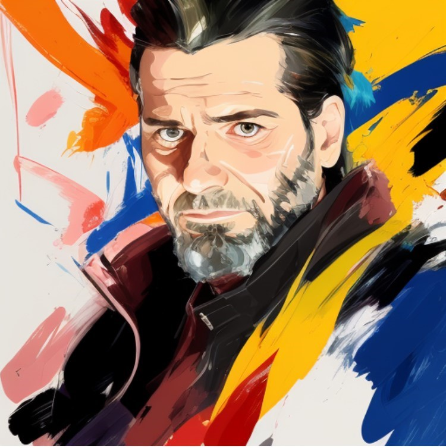

⟲Activités extra-professionnelles.
Au-delà du métier : découvrez mon CV digital à travers mes passions, ambitions et projets de création, de partage et formation.

Légende explicative de la photo (Photo de moi, modifier par IA)
Pourquoi & Pour qui ce site ?
- Le déclic : L'envie d'apprendre et de créer : Tout commence par une curiosité insatiable et le besoin de comprendre l'envers du décor. Fasciné par les nouvelles technologies, je ne voulais pas simplement être un utilisateur passif, mais un acteur. Ce site est né de cette envie viscérale de manipuler le HTML5 et le CSS3, de lier l’utile à l’agréable, et de transformer l'apprentissage en un véritable terrain de jeu.
- Le moteur : Mettre mes idées en application :Avoir des idées, c'est bien, mais leur donner vie, c'est encore mieux ! Je voulais un espace de liberté totale pour tester, expérimenter et voir le résultat direct de mes efforts. C'est un peu comme résoudre un Rubik's Cube : on observe, on cherche la logique, on manipule, et quelle satisfaction quand toutes les facettes s'alignent parfaitement après un effort de persévérance !
- L'ADN : Une carte de visite pas comme les autres : Oubliez les CV rigides, les listes de diplômes et les expériences professionnelles standardisées. Ce site, c'est ma carte de visite humaine, intime et authentique. C'est une fenêtre ouverte sur mon quotidien, mes connaissances, mes curiosités du moment et mes apprentissages permanents. Bref, c'est un condensé de ce qui m'anime vraiment jour après jour.
- La destination : Pour moi... et pour vous ! :Au fond, pour qui ai-je codé ces pages ? D'abord pour moi, pour relever le défi et savourer le plaisir de la création numérique. Mais c'est surtout pour vous : mes proches, les esprits curieux, les passionnés de partage ou les voyageurs du web égarés ici. Je l'ai conçu pour vous montrer mon univers et, qui sait, vous donner à votre tour l'envie d'apprendre et de vous lancer.
- Ce site : Pour ceux qui veulent accélérer leur vitesse de résolution (F2L, OLL, PLL).
🧩Un condensé de curiosités, d'apprentissages et de partage.
Un condensé de curiosités, d'apprentissages et de partage.
- 💻 L'art du code : HTML5 & CSS3 faits main : C’est ici que je mets les mains dans le cambouis ! Vous trouverez sur ce site le suivi de mes apprentissages en développement web. Pas de templates tout faits, mais du code brut, des essais graphiques et la preuve vivante qu’on peut créer un site de A à Z avec un simple bloc-notes et une bonne dose de persévérance. C'est mon laboratoire numérique en constante évolution.
- 🤖 L'Intelligence Artificielle au quotidien : L'IA n'est pas un outil du futur, c'est mon copilote d'aujourd'hui. Je partage ici ma fascination pour ces technologies et la manière dont je les intègre dans mes créations. Vous y découvrirez mes retours d'expérience sur l'utilisation des intelligences artificielles, ainsi que les coulisses de nos sessions de travail (comme la création de ce site !).
- 🧠 Le Rubik's Cube pour tous (et pour toutes les mains) : Résoudre un cube 3x3 n'est pas une question de génie, c'est une question de méthode ! Passionné par ce casse-tête, j'ai développé une méthode de résolution simplifiée, entièrement rédigée en français pédagogique. Que vous soyez droitier, gaucher ou parfaitement ambidextre, ce guide visuel et vivant s'adapte à vous et reste entièrement évolutif.
- 🕹️ Des tutos interactifs avec AnimCube : Pour rendre l'apprentissage du Rubik's Cube encore plus concret, j'intègre sur le site le superbe outil AnimCubeJS. Grâce à ce simulateur 3D interactif directement intégré dans mes pages, vous pourrez manipuler le cube virtuel, observer les rotations en temps réel sous tous les angles et comprendre chaque mouvement instantanément, sans quitter votre navigateur.
- 🤝 Mes communautés Facebook & Entraide à Anderlecht : Parce que la technologie ne vaut rien si elle n'aide pas l'humain, ce site sert aussi de pont vers mes projets citoyens. Je vous présente ici les groupes Facebook que j'ai créés : des espaces d'entraide locale et de solidarité citoyenne au cœur de ma commune d'Anderlecht, mais aussi des groupes de partage technique pour apprendre à dompter l'intelligence artificielle grâce aux bons prompts.
- 🎸 La guitare sans prise de tête : des tablatures aux accords :Pas besoin de connaître le solfège pour se faire plaisir ! Je partage ici mon apprentissage de la guitare avec une approche ultra-pratique. Vous découvrirez mes astuces simples pour apprendre à lire les tablatures, des guides visuels pour savoir exactement comment placer ses doigts sur le manche, et des mini-tutoriels pour jouer vos premiers morceaux. C'est la musique accessible à tous, à votre rythme.
- Des algorithmes avancés : Pour ceux qui veulent accélérer leur vitesse de résolution (F2L, OLL, PLL).
- Des algorithmes avancés : Pour ceux qui veulent accélérer leur vitesse de résolution (F2L, OLL, PLL).